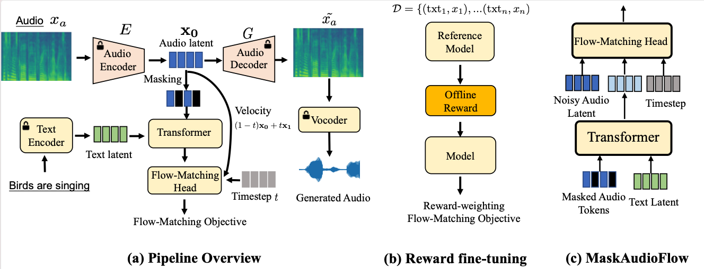

Abstract. Flow-matching generative models have created significant milestones in text-to-audio generation, powered by scalable training with increased data, computational resources, and model size, while their scalable inference remains less explored. In this work, we propose MaskAudioFlow, a continuous flow-matching transformer with masked generative modeling designed for scaling text-to-audio inference-time prediction. Specifically, MaskAudioFlow 1) masks spans of audio frames in training and approximates the continuous velocity vector field with flow-matching objective, and 2) performs inference via masked prediction, where we mask out generation and re-predict them through iterative decoding. To reduce the gap between generation and human preferences, we fine-tune MaskAudioFlow using reward signals from text-audio correspondence and perceptual aesthetics. Experimental results demonstrate that MaskAudioFlow achieves state-of-the-art performance in text-to-audio generation, effectively scaling inference-time computation through iterative masked prediction. Moreover, the preference-tuned model demonstrates superior text-audio alignment faithfulness and enhanced perceptual aesthetics.

MaskAudioFlow consists of the following main components: 1) VAE to encode spectrogram into a latent and convert it back to spectrogram; 2) text encoder to derive high-level textual representation, 3) flow-matching transformer that masks span of continuous audio latent in training, and inference with ODE sampler via iterative decoding, and 4) separately-trained neural vocoder to convert mel-spectrograms to raw waveforms. In the following sections, we describe these components in detail.